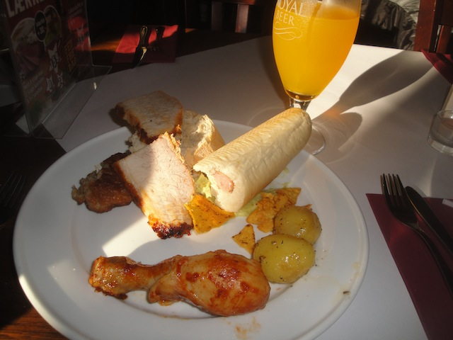

| |
Tivoli Friheden Review

Tivoli Friheden is a fun little small park that may have a couple roller coasters, but really. This park isn't about the credits. I mean, yeah. Credit whoring is fun, and a couple of these coasters are...intersting. Crappy, but intersting. No, what really makes this park stand out is the fact that they have a SCAD Tower. No really. One of the few SCAD Towers in the world is here. That alone should make you want to get out here. I'm not sure exactly how popular the park is with locals as we had the park all to ourselves since we pretty much bought out the place for a night. That was a ton of fun and really cool. No really. Having a park all to yourselves is really fun. You get to really explore the park and see all that it has to offer. Now granted, I didn't really explore Tivoli Friheden in great detail as I spent a lot of time on the SCAD Tower as well as getting all the credits. But it did seem like they take care of the park. Everything was clean, there was a nice variety of rides, and it seemed to have a nice atmosphere. OK, maybe not a nice atmosphere, but it had a good setting and seemed just like a really fun carnival. So yeah. The SCAD Tower is amazing and all, but it still seems like a fun little park with some...credits, and a couple other rides that I'll go over later in the update that seem like a lot of fun.
Rollercoasters
There is a link to a review of all the Rollercoasters at Tivoli Friheden.
Please keep in mind that there is no review of Vindfald because it didn't exist when I last visited.
Crappy Coasters
Tyfonen Review

Kiddy Coasters
Dragen Review

Past Coasters
Cobra Review

Orkanens Øje Review

Flat Rides
Here are the reviews of all the Flat Rides at Tivoli Friheden. Now I didn't ride any of the flat rides here. But from what I saw, they seem to have an...interesting selection. Actually, after looking over this flat ride collection. They might have one flat ride that actually stands out. It's called Pegasus, and it looks like it might be whatever that flat ride at Power Park. No joke. That thing is one of the craziest flat rides ever. And if this is a clone of that, then I regret missing that (even if it meant me doing the SCAD Tower a 2nd time). Because aside from that, they just seem to have a pirate ship, a paratrooper, some bumper cars, and a ferris wheel. Not that exciting. But hey. If that Pegasus ride is whatever crazy thing is at Power Park, make sure to ride that.
Dark Rides
OK. A small little park like Tivoli Friheden may not have the best dark ride collection ever, but they do have one dark ride, and it's actually pretty fun. It's called Elses Hotel (Crappiest hotel I've ever stayed in). Apparently it's this shooting dark ride and...you wind up shooting skeletons. There's human remains in the fridge, and some old woman. I think this might as well be the Jeffery Dahmer dark ride as this basically is his house as a shooting dark ride. Just a really fun little shooting dark ride. Highly recommend giving this a ride. Oh, and they also have a fun house. That looks fun too.
 "Come on! Be a hero! Shoot Jeffery Dahmer!" =)
"Come on! Be a hero! Shoot Jeffery Dahmer!" =)
Water Rides
Tivoli Friheden has no water rides.
Dining
I'm not sure if the food I ate at Tivoli Friheden is food that they normally serve inside the park or if this was something done just as a special event for us. Either way, I really liked it. The food we ate at was inside their big resteraunt (Not sure what it's called). The meat served was pretty much chicken. Chicken in multiple forms. Chicken leg (as in a drumstick), grilled chicken breast, and it was pretty good. They also had hot dogs, except differently. These hot dogs weren't typical usual hot dogs. These hot dogs were completely inside the roll. I will admit. That's an imporvement. And the potatos served were also really good. Hell, I think there were even Doritos. Can't go wrong with Doritos. Those are all really good. It may not be explicatly Danish, but it's better that way. You'll be satisfied with the food here. =)

I'd like more chicken with this chicken please.
Theming and Other Attractions
Here are the reviews of all the other stuff at Tivoli Friheden. As for the theming, there's really not much. Yeah, there's little bits of it here and there. But for the most part, this just feels like a carnival and an urban park. The rides are mostly just plopped down on the asphalt. But as far as other stuff to do is concerned, there is plenty more. I mean, we haven't even reached the star attraction of the park. Yeah, it's sort of not a ride. But F*CK IT!!! IT IS THE BEST THING TO BE IN ANY AMUSEMENT PARK!!!! I am of course, talking about the SCAD Tower. Now for those of you who don't know what a SCAD Tower is, it's basically where they just take you up 150 ft into the air, and then just drop you straight into a net. No bungee cord. No nothing. Just a sheer 150 ft drop straight into a net. And let me tell you, this is one of the most terrifying things ever. I'm not just talking about theme park rides such as roller coasters and flat rides and stuff like that. No, this is far scarier than any roller coaster or flat ride. I'm talking about extreme activities. This thing is scarier than both skydiving and bungee jumping. The only thing I have ever done that is scarier than the SCAD Tower is jumping the 70 ftr @ Tar Creek Falls. And that's literally just jumping off a 70 ft (21 meters) cliff into water! So yeah. The SCAD Tower is one of those things you have to do. Yeah, it's an upcharge, but it's worth every single penny (or kroner in this case). The sad thing is that these rides are becoming rare. I know there's two of them. The one here at Tivoli Friheden, and there's also the SCAD Tower in Dallas, TX. Both of which, I've done. But aside from those, is there any more? I know there used to be one in the Wisconson Dells, but they had to remove it because the operators were a bunch of morons who didn't realize the net wasn't up and just dropped a girl to the ground. So now that's gone. I think there used to be one in Oregon that's now gone. Any others left? I really hope so because these things are just absolutely nuts. Seriously, why can't these become as popular as Skycoasters? They're certainly way more fun. I'd actually do them often if they were everywhere. OK. Anything else aside from the SCAD Tower? Well, apparently they have some arcades and...I don't think there's much else. I could be missing something, but come on. When you've got the SCAD Tower, you don't need much more.
 Most terrifying thing in any theme park.
Most terrifying thing in any theme park.
In Conclusion
Tivoli Friheden is a fun little theme park. Yeah, it's far from being perfect. But you know what? It's just a lot of fun. They have a couple coasters here that while they may not be really that good (Nobody is celebrating spinning mice that barely spin and Pinfari Loopers), but you still have fun at parks like this. And let's not forget, they have a freaking SCAD Tower here. Yeah, you can spend some time relaxing, riding some rides, just enjoying the park. Chilling out and taking it slow. But the SCAD Tower will wake you up and make you crap your pants. Yeah, it may seem like a credit whoring stop. And to a certain extent, it is. There's really nothing special about any of the coasters here. But even if you are not a credit whore and will only go out to parks that have good rides because you don't want to waste your time with all the Boomerangs and SLCs, then you should still come to Tivoli Friheden simply because the SCAD Tower is that good. You need to do a SCAD Tower (even if you've done the one in Texas, still do the one here). Plus, Cobra is...unique enough. It's just a fun little park with one of the scariest rides ever.
Enthusiast FAQs.
*Are there kiddy coaster restrictions? - No. Marienkaferbahn has no restrictions for adults.

Tips
*Make sure you do Sky Tower (the SCAD Tower). It's freaking awesome!
*Get all the credits.
*I'm dead serious. Do the SCAD Tower. It is worth the upcharge.
*Have Fun!!!!
Theme Park Category:
Small Park
Location
Århus, Jylland, Denmark
Last Day Visited
June 19, 2014
Video
I don't have enough footage to shoot a Tivoli Friheden video. Maybe I'd be able to make a small one with more shooting, but I don't currently have the footage.
Complete Update List
2014
TPR's Scandinavia Trip
Here's a link to the parks website.
Home
|